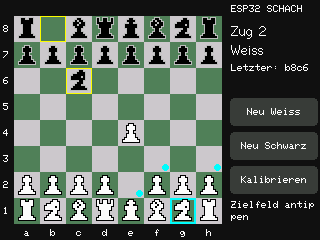

Touch · Display · Terminal
ESP32 Firmware installieren
Ein eigenständiger Schachcomputer auf deinem ESP32. Installiere die Firmware direkt per USB – ohne Arduino IDE.
Version wird geladen …
Unterstützt: ESP32 / ESP32-WROOM-32, 4 MB Flash
Für den vorhandenen ILI9341- und SPI-Touch-Aufbau. ESP32-S2, S3 und C3 werden nicht unterstützt.

In vier Schritten bereit zum Spielen
- ESP32 mit einem USB-Datenkabel anschließen.
- Auf Install klicken.
- Den seriellen Port des ESP32 auswählen.
- Installation bestätigen und den Flash-Vorgang abwarten.
Die Installation ersetzt die Firmware und setzt gespeicherte Daten einschließlich Touch-Kalibrierung zurück. Danach die vier Kreuze auf dem Display antippen.
Chrome oder Edge auf einem Desktop-Rechner empfohlen. Serielle Monitore vorher schließen. Bei Verbindungsproblemen BOOT während des Verbindungsaufbaus gedrückt halten.
Installer wird geladen …